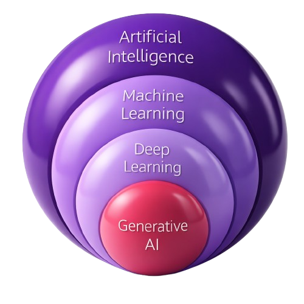
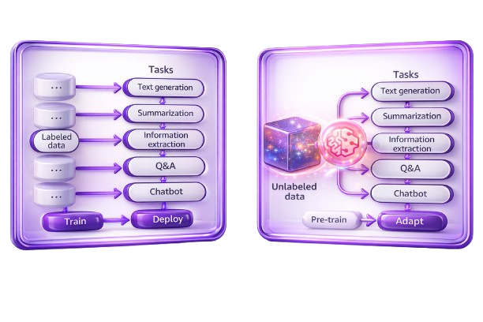
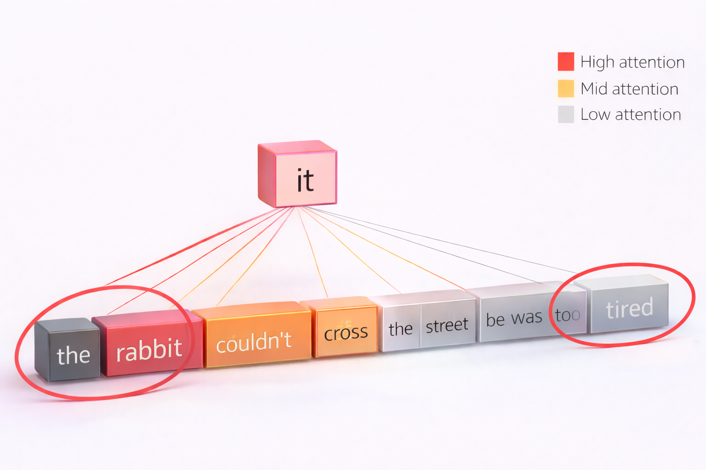
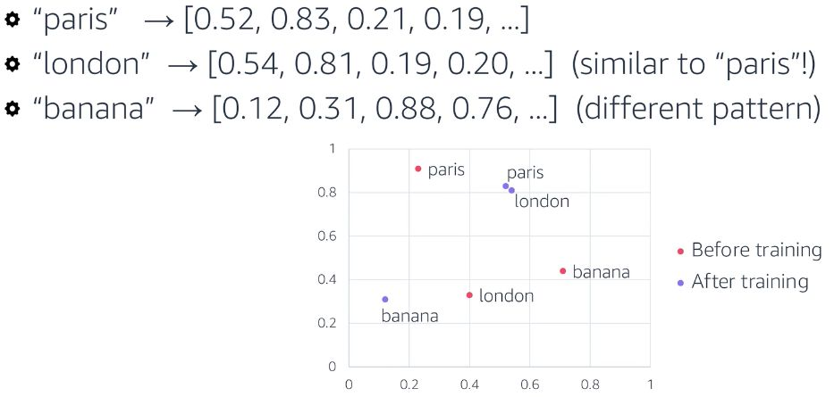
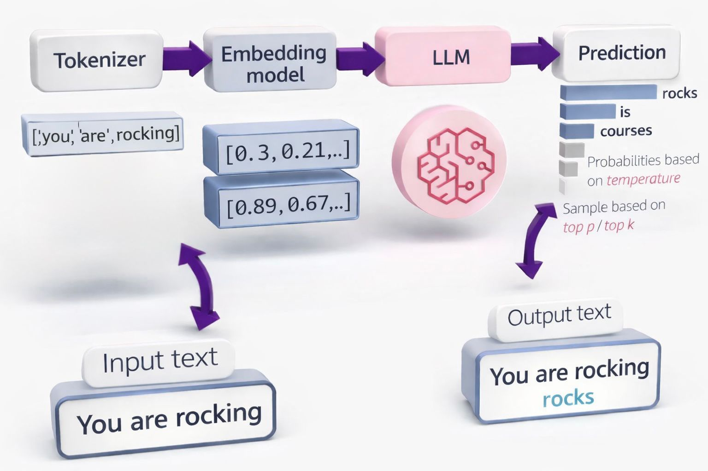
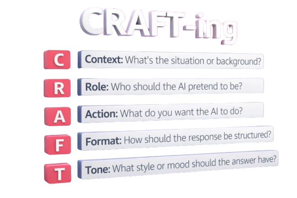
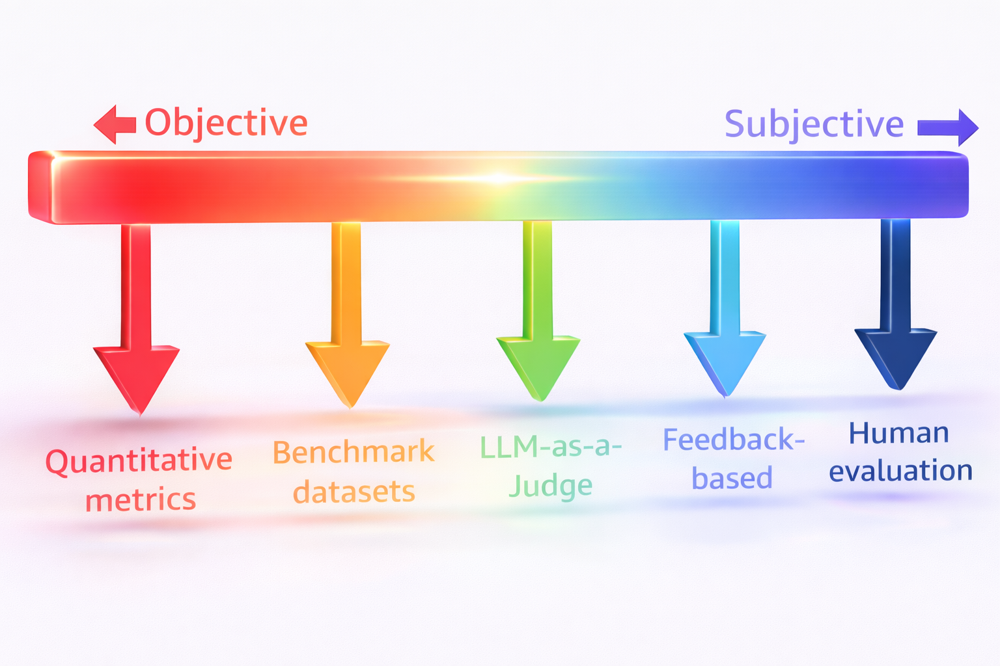
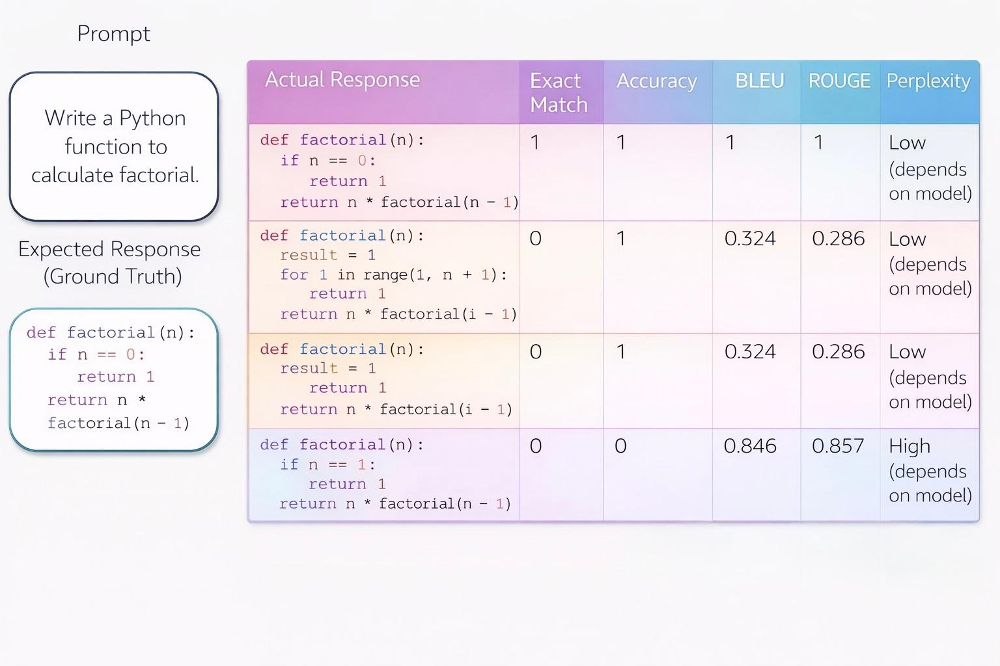
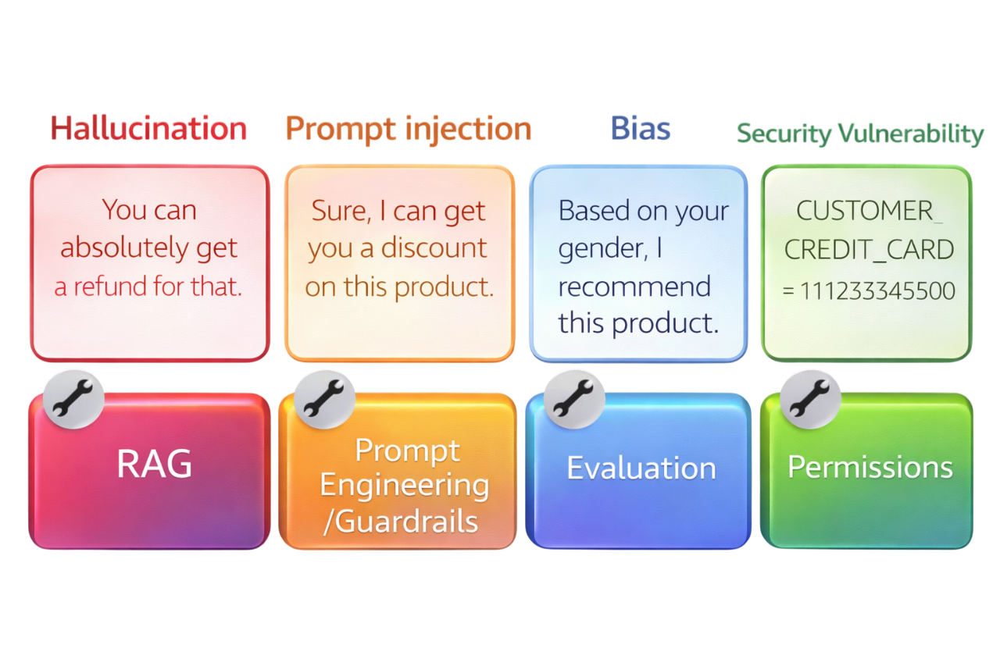
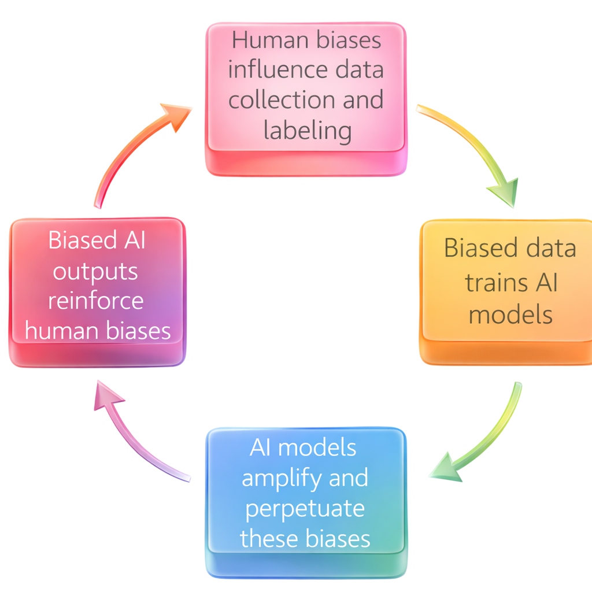

The Core of AI
- Artificial Intelligence: A transformative technology that enables machines to perform human-like problem-solving tasks.
- Machine Learning: A technique leveraging data and algorithms to enable AI systems to learn and improve autonomously over time.
- Deep Learning: A method that teaches computers to process information in a way inspired by the neural networks of the human brain.
- Generative AI: AI capable of creating net-new content and ideas, including complex conversation, stories, images, video, and music.

Traditional ML models & Foundation Models
Generative AI is powered by Foundation Models. These are massive machine learning models trained on a broad spectrum of generalized, unlabeled data. Because of this vast pre-training, they are capable of performing a wide variety of general tasks, such as understanding language, generating text and images, and conducting natural conversations, without needing to be built from scratch for every specific use case.

Large Language Models (LLMs)
How they fit together: While a Foundation Model is the overarching architecture capable of multi-tasking, an LLM is a specific type of Foundation Model heavily optimized for text and language.
LLMs are very large Deep Learning models pre-trained on vast datasets. To reason and understand context, they rely on a mechanism called Self-Attention alongside Positional Encoding to track the order of words.
Large Language Models are built using a particular type of neural network architecture called the Transformer. This architecture allows the model to process different parts of the input simultaneously.
Example LLM Tasks:

Beyond Text: Vision & Omnimodal Models
Training & Embeddings
Training (Building Knowledge): A machine learning algorithm learns the relationship between features and labels. LLMs ingest millions of text documents and learn by trying to predict the most likely next word. The model adjusts its internal weights until its predictions closely match reality.
However, computers do not understand words, they understand numbers. To process text, we use Embeddings. We map words into a multidimensional space as vectors of numbers.
Text: "You are rocking!"
Tokens: ["You", "are", "rocking"]
Embeddings: "You" -> [0.5, -0.1, 0.9, ..., 7.4]
Every token gets a unique embedding. Through training, the model learns spatial relationships. For example, the embeddings for "Paris" and "London" will be clustered close together in this multidimensional space, while "banana" will be mapped far away.

Post-Training & Inference
- Alignment: Pre-training creates raw capability. Post-training refines the model to align with human preferences, expectations, and safety values.
- Distillation: A highly advanced technique where knowledge from a massive "Teacher" model is extracted, compressed, and transferred to a smaller, faster "Student" model.
- Inference (Using the Model): Once trained, the model generates outputs based on learned patterns. The randomness and focus of these predictions are controlled by tuning parameters like Temperature, Top-P, and Top-K.

Controlling the AI: Improving Output
LLMs are incredibly powerful, but their raw output can sometimes be unpredictable. To rein them in and get highly accurate, formatted responses, engineers use four main approaches: Prompt Engineering, Context Engineering, RAG, and Fine-Tuning.
Prompt Engineering
The input given to a model to elicit a specific response. It typically consists of two layers:
- System Prompt: The overarching instructions that run in the background, guiding the AI's persona, rules, and overall behavior.
- User Prompt: The direct question or instruction the user types into the chat or API.
Both prompts are combined and sent to the LLM during inference. Using frameworks like CRAFT helps guarantee high-quality, structured inputs.

Prompting Techniques Matrix
Basic
- Zero-Shot: Prompting with an instruction but providing zero examples.
- Few-Shot: Providing the instruction alongside a few examples to establish a pattern.
- Role-Playing: Assigning a specific persona or expertise to influence the model's tone and knowledge focus.
Intermediate
- Structured Output: Instructing the AI to return data in strict formats like JSON, XML, or custom schemas.
- Chain-of-Thought (CoT): Forcing the model to break compound tasks into intermediate reasoning steps (e.g., adding "think step-by-step").
Advanced
- Self-Refine: The model generates an initial response, reviews its own output against constraints, and iteratively improves it.
- ReAct (Reasoning + Acting): An agentic loop where the model thinks, acts (uses a tool), observes the result, and repeats.
Context Engineering: Managing the Window
Context is all the input information provided to the model. The Context Window is the absolute maximum amount of input it can consider at once, strictly measured in tokens.
When a conversation hits this limit, the context window is full. Different systems handle this differently: early information might be permanently dropped, or older messages might be dynamically summarized to save space.
Why Context Engineering Matters:
- Finite Context Window: Every model has a strict token limit for what it can process simultaneously, making it impossible to pass an entire database or document repository in a single prompt.
- Computational Cost: Processing massive token counts is expensive and slow.
- The Trade-off: Balancing too little context (hallucinations) vs. too much context (the model loses the "needle in the haystack").
RAG & Fine-Tuning
Retrieval-Augmented Generation (RAG)
Instead of relying purely on what the model memorized during training, RAG introduces an external knowledge base (usually a Vector Database).
When a user asks a question, the system first retrieves highly relevant chunks of data from the database. It then injects this data into the prompt alongside the user's question. This allows the model to generate accurate answers based on up-to-date, proprietary data without needing expensive retraining.
Fine-Tuning
After a pre-trained model is aligned, it can undergo Fine-Tuning. This involves further training the model on a smaller, highly curated, and specific dataset to deeply alter its behavior, tone, or domain-specific knowledge.

Evaluating AI Models
How do we know the system is actually working as desired? Evaluation is essential to mitigate risk, build trust, establish baselines, and measure performance.
When building production models, engineers must constantly balance a complex trilemma: Model Quality & Flexibility vs. Latency (time to generate) vs. Cost. Because of this, evaluation requires a spectrum of approaches ranging from purely objective mathematical scoring to highly subjective human review.

Quantitative Metrics
Quantitative metrics provide objective, numerical measurements to evaluate baseline LLM performance.
- Exact Match: The prediction matches the expected output character-for-character.
- Accuracy: The overall proportion of correct predictions.
- Perplexity: A measurement of how confidently the model predicts the next word (lower is better).
- BLEU: Precision-based text comparison, often used for translation.
- ROUGE: Recall-oriented text evaluation, often used for summarization.

Advanced Evaluation Methodologies
Benchmark Datasets
High-quality, standardized datasets containing prompts and expected responses. They power leaderboards to rank models.
LLM as a Judge
Using a superior model (LLM-B) to evaluate the output of another model (LLM-A). This is highly scalable and valuable for subjective tasks like creative writing, or when creating manual ground-truth data is too expensive.
Feedback-Based Evolution
Collecting real-world signals (like thumbs-up/down) through live A/B testing. Automated metrics often miss the nuances of what makes an answer truly successful to an end-user; live feedback bridges this gap.
Human Evaluation
Conducted by domain specialists. It is costly and resource-intensive, but provides the highest quality assessment. Essential for validating critical edge cases and capturing qualitative insights numbers alone miss.
Evaluating Complex Agents
Because autonomous agents build upon algorithms and utilize multiple tools, they must be evaluated across three distinct operational levels:
Responsible AI & Risk Mitigation
Responsible AI is the discipline of designing, developing, and deploying AI technology with the explicit goal of maximizing human benefit while minimizing risks.
It spans the entire AI lifecycle through the Design, Build, and Operate phases. Assessing risk proactively allows engineers to identify, evaluate, and mitigate problems early when they are least costly to fix, ultimately protecting users and maintaining organizational trust.
Core Dimensions of Responsible AI:


AI-Augmented Decision Making & Bias
The greatest challenge in AI integration is that both human operators and AI systems bring inherent biases to the table. Understanding these dynamics is critical for building trustworthy systems.
Human Cognitive Biases
- Recency Bias: We heavily favor information we have seen most recently.
- Confirmation Bias: We actively seek out information that confirms our pre-existing beliefs.
- Anchoring Bias: Over-relying on the very first piece of information received and adjusting insufficiently from there.
AI-Specific Human Biases
- Algorithm Aversion: Rejecting sound advice from an algorithm when you would have accepted the exact same advice from a human.
- Algorithm Appreciation: The opposite, rejecting valid human advice because you blindly trust the algorithm.
- Eliza Effect: Projecting actual human-like cognition and emotion onto a computer system.
AI System Biases
- Self-Serving Bias: An LLM favoring its own generated responses over answers provided by external sources.
- Position Bias: Favoring a specific option simply based on where it appeared in the prompt (e.g., always picking "Option A").
- Verbosity Bias: Favoring longer, wordier answers regardless of their actual quality or accuracy.
- Sycophancy: The model prioritizing user satisfaction and agreement over factual accuracy and honesty.